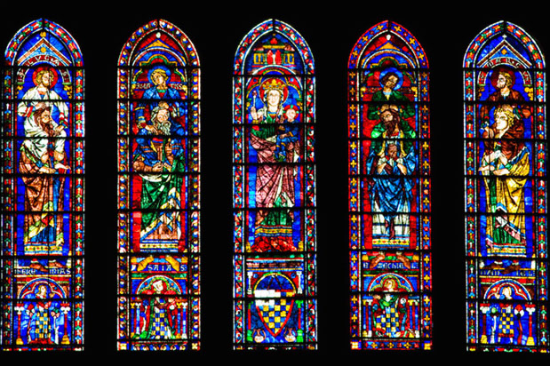
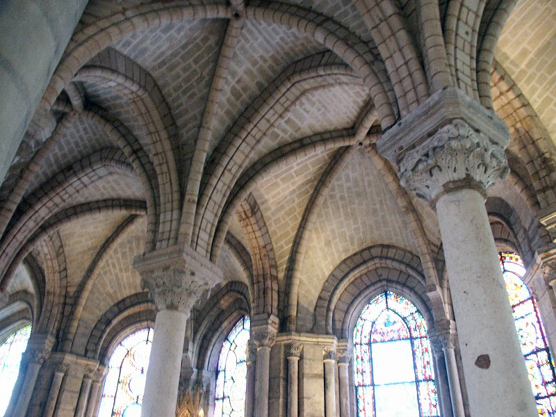
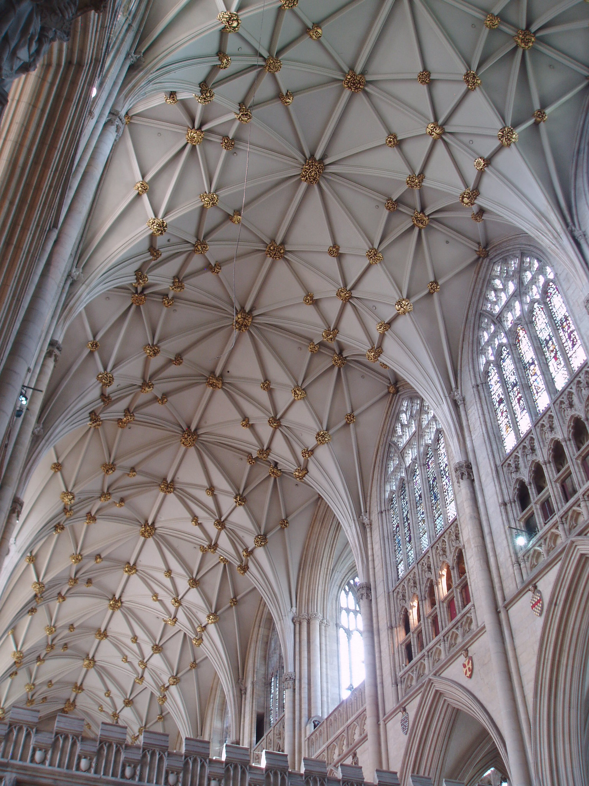

Stained glass, while not pioneered by gothic architecture is certainly a key characteristic. These vibrant windows serve to both illuminate the interior with colored light and convey religious/historical narratives. Here we can see the lancet windows of the Chartres Cathedral.

Image from
blog.stephens.edu
Ribbed Vaulting
Abbey Church of Saint Denis
Ribbed vaulting is distinguished by its intersecting arched ribs. The ribs act to futher support the vaulted cieling allowing for wider and taller naves than previous architectural styles. Ribbed vaulting is a key feature that allowed for the development of other gothic characteristics, notably the large interior spaces. Pictured below is an example from the Abbey Church of Saint-Denis.

Image from
homepages.bluffton.edu
Ornate Decoration
York Minster
Just like the detailed facades of gothic architecture, the interior spaces were filled with ornate decoration. This was a feature of previous romanesque churches as well, but githic architecture tends to take advantage of the advances in the supporting structures and decorates them as well. Below we can see an example of the York Minster.

Image from
flickr.com